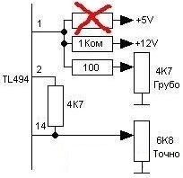
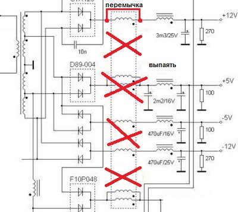
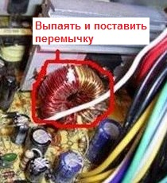

Источник питания из блока питания ПК - 2
Предлагается переделка компьютерного блока питания типа ATX, в регулируемый блок с напряжением от 3 до 25 В и токе 5А.
Берем блок питания с ШИМ TL494 или ее модификациями. Удаляем резистор с первого вывода микросхемы к +5 В и заменяем резистор от первого вывода к 12 В на 1 кОм. Ставим 2 переменных резистора для грубой и точной регулировки (рис. 1).

Рис. 1 - Замена резистора
Затем необходимо выпаять дроссель групповой стабилизации, а в образовавшийся разрыв цепи 12 В впаять перемычку (рис. 2).


Рис. 2 - Удаление дросселя
Также необходимо заменить фильтрующие конденсаторы в выходных цепях, на конденсаторы с более высоким напряжением. Т.к напряжение на выходе теперь изменяющееся то кулер нужно питать от 220 В (есть такие кулеры), либо попробовать запитать его от дежурного напяжения.
Осталось сделать переднюю панель, вывести на нее ручки переменных резисторов, клеммы и вольтметр.
Источники:
radiomaster.com.ua - Регулируемый БП из компьютерного блока питания